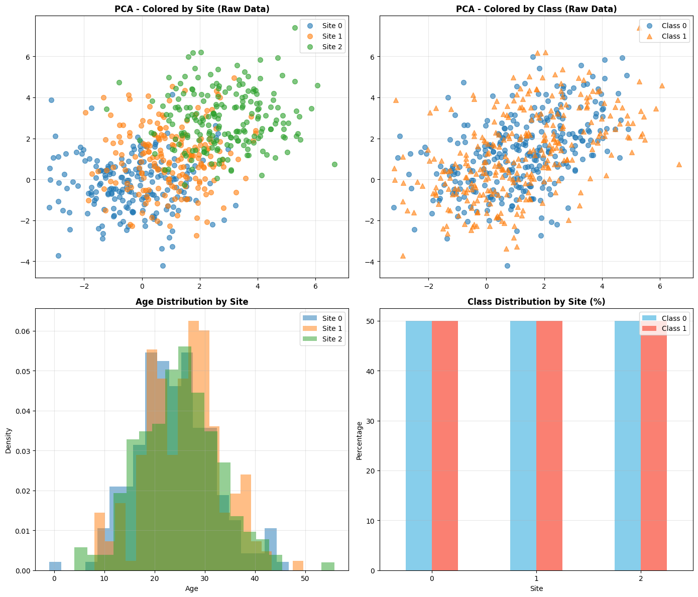
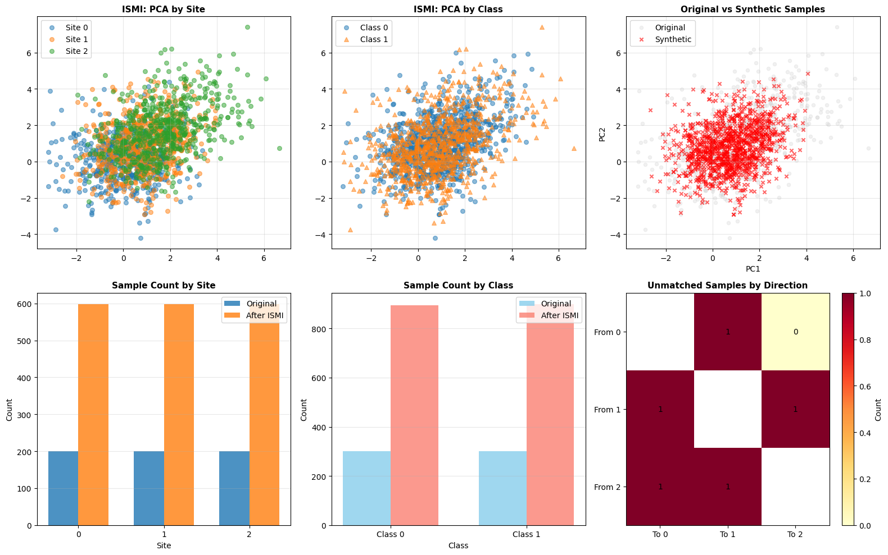
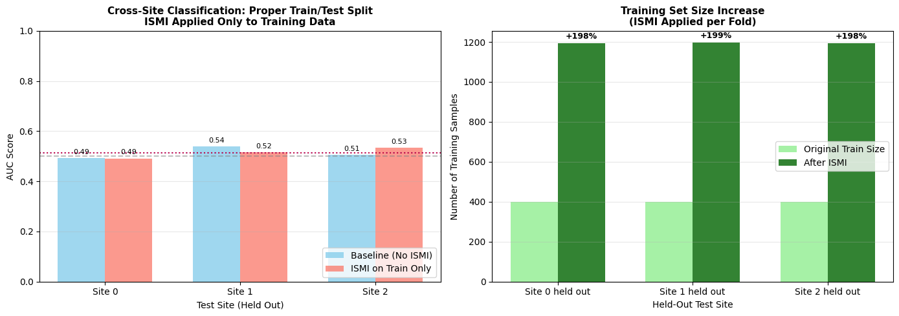

Inter-Site Matched Interpolation (ISMI) - Multi-Site Harmonization Example#
This notebook demonstrates the use of InterSiteMatchedInterpolation for harmonizing
multi-site neuroimaging data. Unlike Intra-Site Interpolation (ISI) which balances
classes within each site independently, ISMI creates synthetic samples by interpolating
between matched subjects across different sites, reducing site-related confounds while
preserving biological signal.
Setup and Imports#
import warnings
import matplotlib.pyplot as plt
import numpy as np
import pandas as pd
from sklearn.ensemble import RandomForestClassifier
from sklearn.metrics import roc_auc_score
# UniHarmony imports
from uniharmony.datasets import make_multisite_classification
from uniharmony.interpolation import InterSiteMatchedInterpolation
warnings.filterwarnings("ignore")
# Set random seed for reproducibility
RANDOM_STATE = 42
np.random.seed(RANDOM_STATE)
Generate Synthetic Multi-Site Data#
We create a dataset with 3 sites, simulating a scenario where:
Site A: Younger population, slight class imbalance
Site B: Older population, different feature distribution
Site C: Mixed population, different acquisition protocol
# Generate base dataset
X, y, sites = make_multisite_classification(
n_samples=600, n_features=2, n_classes=2, n_sites=3, signal_strength=0, random_state=RANDOM_STATE
)
# Create site-specific age and sex covariates for matching
# Site A: Younger, more male
# Site B: Older, balanced
# Site C: Mixed, more female
site_names = np.unique(sites)
n_per_site = len(X) // len(site_names)
ages = np.concatenate(
[
np.random.normal(25, 8, n_per_site), # Site A: young
np.random.normal(25, 8, n_per_site), # Site B: old
np.random.normal(25, 8, n_per_site), # Site C: mixed
]
)
sex = np.concatenate(
[
np.random.choice(["M", "F"], n_per_site, p=[0.9, 0.1]), # Site A: male-biased
np.random.choice(["M", "F"], n_per_site, p=[0.9, 0.1]), # Site B: balanced
np.random.choice(["M", "F"], n_per_site, p=[0.1, 0.9]), # Site C: female-biased
]
)
# Reshape for the interpolator
categorical_covariate = sex.reshape(-1, 1)
continuous_covariate = ages.reshape(-1, 1)
print("=" * 60)
print("DATASET OVERVIEW")
print("=" * 60)
print(f"Total samples: {len(X)}")
print(f"Features: {X.shape[1]}")
print(f"Sites: {np.unique(sites)}")
print(f"Classes: {np.unique(y)}")
print("\nSite distribution:")
for site in np.unique(sites):
mask = sites == site
print(f" {site}: {np.sum(mask)} samples, Class 0: {np.sum(y[mask] == 0)}, Class 1: {np.sum(y[mask] == 1)}")
print("\nCovariate statistics:")
print(f" Age - Mean: {np.mean(ages):.1f}, Std: {np.std(ages):.1f}")
print(f" Sex - M: {np.sum(sex == 'M')}, F: {np.sum(sex == 'F')}")
2026-04-15 09:31:32 [info ] Using balanced classes: [0.5, 0.5, 0.5]
2026-04-15 09:31:32 [info ] Generating 200 samples for site 0
2026-04-15 09:31:32 [debug ] Site 0, site effect strength [[-0.32458376 -0.32458376]]
2026-04-15 09:31:32 [info ] Generating 200 samples for site 1
2026-04-15 09:31:32 [debug ] Site 1, site effect strength [[0.91374989 0.91374989]]
2026-04-15 09:31:32 [info ] Generating 200 samples for site 2
2026-04-15 09:31:32 [debug ] Site 2, site effect strength [[2.83846079 2.83846079]]
2026-04-15 09:31:32 [info ] Generated 600 samples across 3 sites
2026-04-15 09:31:32 [info ] Class distribution: [300 300]
2026-04-15 09:31:32 [info ] Site distribution: [200 200 200]
============================================================
DATASET OVERVIEW
============================================================
Total samples: 600
Features: 2
Sites: [0 1 2]
Classes: [0 1]
Site distribution:
0: 200 samples, Class 0: 100, Class 1: 100
1: 200 samples, Class 0: 100, Class 1: 100
2: 200 samples, Class 0: 100, Class 1: 100
Covariate statistics:
Age - Mean: 24.9, Std: 7.8
Sex - M: 383, F: 217
Generate Synthetic Multi-Site Data#
We create a dataset with 3 sites, simulating a scenario where:
Site A: Younger population, slight class imbalance
Site B: Older population, different feature distribution
Site C: Mixed population, different acquisition protocol
Visualize Raw Data - Site Effects#
Before harmonization, we expect to see strong clustering by site rather than by class.
fig, axes = plt.subplots(2, 2, figsize=(14, 12))
X_pca = X
ax1 = axes[0, 0]
for site in np.unique(sites):
mask = sites == site
ax1.scatter(X_pca[mask, 0], X_pca[mask, 1], label=f"Site {site}", alpha=0.6, s=50)
ax1.set_title("PCA - Colored by Site (Raw Data)", fontsize=12, fontweight="bold")
ax1.legend()
ax1.grid(True, alpha=0.3)
# PCA by class
ax2 = axes[0, 1]
for cls in np.unique(y):
mask = y == cls
ax2.scatter(X_pca[mask, 0], X_pca[mask, 1], label=f"Class {cls}", alpha=0.6, s=50, marker="o" if cls == 0 else "^")
ax2.set_title("PCA - Colored by Class (Raw Data)", fontsize=12, fontweight="bold")
ax2.legend()
ax2.grid(True, alpha=0.3)
# Age distribution by site
ax3 = axes[1, 0]
for _, site in enumerate(np.unique(sites)):
mask = sites == site
ax3.hist(ages[mask], bins=20, alpha=0.5, label=f"Site {site}", density=True)
ax3.set_title("Age Distribution by Site", fontsize=12, fontweight="bold")
ax3.set_xlabel("Age")
ax3.set_ylabel("Density")
ax3.legend()
ax3.grid(True, alpha=0.3)
# Class distribution by site
ax4 = axes[1, 1]
site_class = pd.crosstab(sites, y, normalize="index") * 100
site_class.plot(kind="bar", ax=ax4, color=["skyblue", "salmon"])
ax4.set_title("Class Distribution by Site (%)", fontsize=12, fontweight="bold")
ax4.set_xlabel("Site")
ax4.set_ylabel("Percentage")
ax4.legend(["Class 0", "Class 1"])
ax4.tick_params(axis="x", rotation=0)
ax4.grid(True, alpha=0.3, axis="y")
plt.tight_layout()
plt.show()
print("\nObservation: Strong site clustering visible in PCA, indicating site effects")
print("that may confound classification. Age distributions differ across sites.")

Observation: Strong site clustering visible in PCA, indicating site effects
that may confound classification. Age distributions differ across sites.
Apply Inter-Site Matched Interpolation (ISMI)#
We use ISMI with the following configuration:
Mode: pairwise (all site combinations)
Matching: Age (±5 years tolerance) and Sex (exact match)
Alpha: 0.3 (constant) - keeps synthetic samples closer to base site
k: 2 (generate 2 synthetic samples per match)
print("=" * 60)
print("APPLYING INTER-SITE MATCHED INTERPOLATION")
print("=" * 60)
# Configure ISMI
ismi = InterSiteMatchedInterpolation(
alpha=0.3, # Constant alpha
target_tolerance=5, # Exact class match required
covariate_tolerance=5,
k=1, # 2 matches per sample
mode="pairwise",
)
# Apply interpolation
X_ismi, y_ismi = ismi.fit_resample(
X, y, sites=sites, categorical_covariate=categorical_covariate, continuous_covariate=continuous_covariate
)
sites_ismi = ismi.sites_resampled_
print("\n" + "=" * 60)
print("INTERPOLATION RESULTS")
print("=" * 60)
print(f"Original samples: {len(X)}")
print(f"Synthetic samples generated: {len(X_ismi) - len(X)}")
print(f"Total after ISMI: {len(X_ismi)}")
print(f"Expansion ratio: {(len(X_ismi) / len(X) - 1) * 100:.1f}%")
print("\nUnmatched samples per direction:")
for direction, count in ismi.unmatched_samples_.items():
print(f" {direction[0]} → {direction[1]}: {count} unmatched")
============================================================
APPLYING INTER-SITE MATCHED INTERPOLATION
============================================================
2026-04-15 09:31:33 [debug ] [ISMI] Using 1 categorical covariates
2026-04-15 09:31:33 [debug ] [ISMI] Using 1 continuous covariates with tolerance: [5.]
2026-04-15 09:31:33 [info ] [ISMI] Mode: pairwise
2026-04-15 09:31:33 [info ] [ISMI] Sites: [0 1 2] (3 sites, 3 pairs)
2026-04-15 09:31:33 [info ] [ISMI] Alpha: constant=0.3
2026-04-15 09:31:33 [info ] [ISMI] Behavior: k=1 matches per sample
2026-04-15 09:31:33 [info ] [ISMI] Target tolerance: 5
2026-04-15 09:31:33 [info ] [ISMI] Categorical covariates: 1
2026-04-15 09:31:33 [info ] [ISMI] Continuous covariates: 1 (tol: [5.])
2026-04-15 09:31:33 [info ] [ISMI] Processing 3 pairs
2026-04-15 09:31:33 [info ] [ISMI] Pair: 0 (200) ↔ 1 (200)
2026-04-15 09:31:33 [info ] [ISMI] Generated 398 samples (2 unmatched)
2026-04-15 09:31:33 [info ] [ISMI] Pair: 0 (200) ↔ 2 (200)
2026-04-15 09:31:33 [info ] [ISMI] Generated 399 samples (1 unmatched)
2026-04-15 09:31:33 [info ] [ISMI] Pair: 1 (200) ↔ 2 (200)
2026-04-15 09:31:33 [info ] [ISMI] Generated 398 samples (2 unmatched)
2026-04-15 09:31:33 [info ] [ISMI] Complete: 600 original + 1195 synthetic = 1795 total (199.2% increase), 5 unmatched
============================================================
INTERPOLATION RESULTS
============================================================
Original samples: 600
Synthetic samples generated: 1195
Total after ISMI: 1795
Expansion ratio: 199.2%
Unmatched samples per direction:
0 → 1: 1 unmatched
1 → 0: 1 unmatched
0 → 2: 0 unmatched
2 → 0: 1 unmatched
1 → 2: 1 unmatched
2 → 1: 1 unmatched
Visualize Harmonized Data#
fig, axes = plt.subplots(2, 3, figsize=(16, 10))
X_ismi_pca = X_ismi
# Plot 1: ISMI data by site
ax1 = axes[0, 0]
for site in np.unique(sites_ismi):
mask = sites_ismi == site
ax1.scatter(X_ismi_pca[mask, 0], X_ismi_pca[mask, 1], label=f"Site {site}", alpha=0.5, s=30)
ax1.set_title("ISMI: PCA by Site", fontsize=11, fontweight="bold")
ax1.legend()
ax1.grid(True, alpha=0.3)
# Plot 2: ISMI data by class
ax2 = axes[0, 1]
for cls in np.unique(y_ismi):
mask = y_ismi == cls
ax2.scatter(X_ismi_pca[mask, 0], X_ismi_pca[mask, 1], label=f"Class {cls}", alpha=0.5, s=30, marker="o" if cls == 0 else "^")
ax2.set_title("ISMI: PCA by Class", fontsize=11, fontweight="bold")
ax2.legend()
ax2.grid(True, alpha=0.3)
# Plot 3: Original vs ISMI comparison (PC1 vs PC2)
ax3 = axes[0, 2]
ax3.scatter(X_pca[:, 0], X_pca[:, 1], c="lightgray", alpha=0.3, s=20, label="Original")
synthetic_mask = np.arange(len(X_ismi)) >= len(X)
ax3.scatter(X_ismi_pca[synthetic_mask, 0], X_ismi_pca[synthetic_mask, 1], c="red", alpha=0.6, s=20, marker="x", label="Synthetic")
ax3.set_title("Original vs Synthetic Samples", fontsize=11, fontweight="bold")
ax3.set_xlabel("PC1")
ax3.set_ylabel("PC2")
ax3.legend()
ax3.grid(True, alpha=0.3)
# Plot 4: Site distribution comparison
ax4 = axes[1, 0]
original_counts = pd.Series(sites).value_counts().sort_index()
ismi_counts = pd.Series(sites_ismi).value_counts().sort_index()
x_pos = np.arange(len(original_counts))
width = 0.35
ax4.bar(x_pos - width / 2, original_counts.values, width, label="Original", alpha=0.8)
ax4.bar(x_pos + width / 2, ismi_counts.values, width, label="After ISMI", alpha=0.8)
ax4.set_title("Sample Count by Site", fontsize=11, fontweight="bold")
ax4.set_xlabel("Site")
ax4.set_ylabel("Count")
ax4.set_xticks(x_pos)
ax4.set_xticklabels(original_counts.index)
ax4.legend()
ax4.grid(True, alpha=0.3, axis="y")
# Plot 5: Class distribution comparison
ax5 = axes[1, 1]
original_class = pd.Series(y).value_counts().sort_index()
ismi_class = pd.Series(y_ismi).value_counts().sort_index()
x_pos = np.arange(len(original_class))
ax5.bar(x_pos - width / 2, original_class.values, width, label="Original", alpha=0.8, color="skyblue")
ax5.bar(x_pos + width / 2, ismi_class.values, width, label="After ISMI", alpha=0.8, color="salmon")
ax5.set_title("Sample Count by Class", fontsize=11, fontweight="bold")
ax5.set_xlabel("Class")
ax5.set_ylabel("Count")
ax5.set_xticks(x_pos)
ax5.set_xticklabels([f"Class {c}" for c in original_class.index])
ax5.legend()
ax5.grid(True, alpha=0.3, axis="y")
# Plot 6: Unmatched samples heatmap
ax6 = axes[1, 2]
unmatched_data = []
for s1 in np.unique(sites):
row = []
for s2 in np.unique(sites):
if s1 == s2:
row.append(np.nan)
else:
key = (s1, s2)
row.append(ismi.unmatched_samples_.get(key, 0))
unmatched_data.append(row)
im = ax6.imshow(unmatched_data, cmap="YlOrRd", aspect="auto")
ax6.set_xticks(range(len(np.unique(sites))))
ax6.set_yticks(range(len(np.unique(sites))))
ax6.set_xticklabels([f"To {s}" for s in np.unique(sites)])
ax6.set_yticklabels([f"From {s}" for s in np.unique(sites)])
ax6.set_title("Unmatched Samples by Direction", fontsize=11, fontweight="bold")
plt.colorbar(im, ax=ax6, label="Count")
for i in range(len(np.unique(sites))):
for j in range(len(np.unique(sites))):
if i != j:
text = ax6.text(j, i, int(unmatched_data[i][j]), ha="center", va="center", color="black", fontsize=10)
plt.tight_layout()
plt.show()
print("\nObservation: ISMI has generated synthetic samples that bridge the gap")
print("between sites while preserving class structure.")
# %%

Observation: ISMI has generated synthetic samples that bridge the gap
between sites while preserving class structure.
Compare Different ISMI Configurations#
Let’s explore how different parameters affect the harmonization:
k=1 vs k=”max” vs k=”average”
Alpha constant (0.3) vs Alpha range (0.2, 0.5)
print("=" * 60)
print("COMPARING ISMI CONFIGURATIONS")
print("=" * 60)
configs = [
{"name": "k=1, a=0.3", "k": 1, "alpha": 0.3},
{"name": "k=max, a=0.3", "k": "max", "alpha": 0.3},
{"name": "k=avg, a=0.3", "k": "average", "alpha": 0.3},
{"name": "k=1, a=[0.2,0.5]", "k": 1, "alpha": (0.2, 0.5)},
]
results = []
for config in configs:
print(f"\nTesting: {config['name']}")
ismi_test = InterSiteMatchedInterpolation(
alpha=config["alpha"],
target_tolerance=5.0,
covariate_tolerance=5,
k=config["k"],
mode="pairwise",
random_state=RANDOM_STATE,
verbose=False,
)
X_test, y_test = ismi_test.fit_resample(
X, y, sites=sites, categorical_covariate=categorical_covariate, continuous_covariate=continuous_covariate
)
results.append(
{
"name": config["name"],
"n_original": len(X),
"n_synthetic": len(X_test) - len(X),
"n_total": len(X_test),
"expansion": (len(X_test) / len(X) - 1) * 100,
"unmatched": sum(ismi_test.unmatched_samples_.values()),
}
)
results_df = pd.DataFrame(results)
print("\n" + results_df.to_string(index=False))
============================================================
COMPARING ISMI CONFIGURATIONS
============================================================
Testing: k=1, a=0.3
---------------------------------------------------------------------------
TypeError Traceback (most recent call last)
Cell In[6], line 15
11
12 results = []
13 for config in configs:
14 print(f"\nTesting: {config['name']}")
---> 15 ismi_test = InterSiteMatchedInterpolation(
16 alpha=config["alpha"],
17 target_tolerance=5.0,
18 covariate_tolerance=5,
TypeError: InterSiteMatchedInterpolation.__init__() got an unexpected keyword argument 'verbose'
Classification Performance: Proper Train/Test Evaluation#
CRITICAL: ISMI must only be applied to the training set to prevent data leakage. We use stratified site-aware cross-validation:
Split sites into train/test groups
Apply ISMI only on training sites
Train on harmonized training data
Test on original test sites (never seen ISMI)
print("=" * 60)
print("PROPER EVALUATION: ISMI ON TRAINING SET ONLY")
print("=" * 60)
def evaluate_with_proper_split(X, y, sites, cat_cov, cont_cov, test_site):
"""Evaluate with ISMI applied only to training data."""
# Split by site
train_mask = sites != test_site
test_mask = sites == test_site
X_train, X_test = X[train_mask], X[test_mask]
y_train, y_test = y[train_mask], y[test_mask]
sites_train = sites[train_mask]
cat_train = cat_cov[train_mask] if cat_cov is not None else None
cont_train = cont_cov[train_mask] if cont_cov is not None else None
# Apply ISMI ONLY to training data
ismi = InterSiteMatchedInterpolation(
alpha=0.3,
target_tolerance=np.array([5.0]),
covariate_tolerance=5,
k=2,
mode="pairwise",
random_state=RANDOM_STATE,
verbose=False,
)
X_train_ismi, y_train_ismi = ismi.fit_resample(
X_train, y_train, sites=sites_train, categorical_covariate=cat_train, continuous_covariate=cont_train
)
# Train on harmonized training data
clf = RandomForestClassifier(n_estimators=10, random_state=RANDOM_STATE)
clf.fit(X_train_ismi, y_train_ismi)
# Test on ORIGINAL test data (never touched by ISMI)
y_prob = clf.predict_proba(X_test)[:, 1]
auc = roc_auc_score(y_test, y_prob)
return {
"test_site": test_site,
"auc": auc,
"n_train_orig": len(X_train),
"n_train_ismi": len(X_train_ismi),
"n_test": len(X_test),
"unmatched": sum(ismi.unmatched_samples_.values()),
}
# Evaluate each site as test (with ISMI on remaining training sites)
unique_sites = np.unique(sites)
results_ismi_train = []
for test_site in unique_sites:
result = evaluate_with_proper_split(X, y, sites, categorical_covariate, continuous_covariate, test_site)
results_ismi_train.append(result)
# Also evaluate baseline (no ISMI) for comparison
def evaluate_baseline(X, y, sites, test_site):
"""Baseline without ISMI."""
train_mask = sites != test_site
test_mask = sites == test_site
X_train, X_test = X[train_mask], X[test_mask]
y_train, y_test = y[train_mask], y[test_mask]
clf = RandomForestClassifier(n_estimators=10, random_state=RANDOM_STATE)
clf.fit(X_train, y_train)
y_prob = clf.predict_proba(X_test)[:, 1]
auc = roc_auc_score(y_test, y_prob)
return {"test_site": test_site, "auc": auc, "n_train": len(X_train), "n_test": len(X_test)}
results_baseline = [evaluate_baseline(X, y, sites, s) for s in unique_sites]
============================================================
PROPER EVALUATION: ISMI ON TRAINING SET ONLY
============================================================
2026-03-26 12:30:35 [debug ] [ISMI] Using 1 categorical covariates
2026-03-26 12:30:35 [debug ] [ISMI] Using 1 continuous covariates with tolerance: [5.]
2026-03-26 12:30:35 [debug ] [ISMI] Using 1 categorical covariates
2026-03-26 12:30:35 [debug ] [ISMI] Using 1 continuous covariates with tolerance: [5.]
2026-03-26 12:30:35 [debug ] [ISMI] Using 1 categorical covariates
2026-03-26 12:30:35 [debug ] [ISMI] Using 1 continuous covariates with tolerance: [5.]
Visualization: Correct Evaluation Results#
print("\n" + "=" * 60)
print("RESULTS: BASELINE (NO ISMI)")
print("=" * 60)
for r in results_baseline:
print(f" Test Site {r['test_site']}: AUC = {r['auc']:.3f} (train={r['n_train']}, test={r['n_test']})")
mean_baseline = np.mean([r["auc"] for r in results_baseline])
print(f" Mean AUC: {mean_baseline:.3f}")
print("\n" + "=" * 60)
print("RESULTS: ISMI APPLIED TO TRAINING SET ONLY")
print("=" * 60)
for r in results_ismi_train:
print(
f" Test Site {r['test_site']}: AUC = {r['auc']:.3f} "
f"(train {r['n_train_orig']}→{r['n_train_ismi']}, test={r['n_test']}, "
f"unmatched={r['unmatched']})"
)
mean_ismi_proper = np.mean([r["auc"] for r in results_ismi_train])
print(f" Mean AUC: {mean_ismi_proper:.3f}")
print(f"\n{'=' * 60}")
print(f"Improvement: {(mean_ismi_proper - mean_baseline):.3f} ({(mean_ismi_proper / mean_baseline - 1) * 100:+.1f}%)")
print(f"{'=' * 60}")
# %%
fig, axes = plt.subplots(1, 2, figsize=(14, 5))
# AUC comparison
ax1 = axes[0]
sites_list = [r["test_site"] for r in results_baseline]
auc_base = [r["auc"] for r in results_baseline]
auc_ismi = [r["auc"] for r in results_ismi_train]
x_pos = np.arange(len(sites_list))
width = 0.35
bars1 = ax1.bar(x_pos - width / 2, auc_base, width, label="Baseline (No ISMI)", alpha=0.8, color="skyblue")
bars2 = ax1.bar(x_pos + width / 2, auc_ismi, width, label="ISMI on Train Only", alpha=0.8, color="salmon")
ax1.axhline(y=0.5, color="gray", linestyle="--", alpha=0.5)
ax1.axhline(y=mean_baseline, color="blue", linestyle=":", alpha=0.7)
ax1.axhline(y=mean_ismi_proper, color="red", linestyle=":", alpha=0.7)
ax1.set_title(
"Cross-Site Classification: Proper Train/Test Split\nISMI Applied Only to Training Data", fontsize=11, fontweight="bold"
)
ax1.set_xlabel("Test Site (Held Out)")
ax1.set_ylabel("AUC Score")
ax1.set_xticks(x_pos)
ax1.set_xticklabels([f"Site {s}" for s in sites_list])
ax1.set_ylim([0, 1])
ax1.legend(loc="lower right")
ax1.grid(True, alpha=0.3, axis="y")
# Add value labels on bars
for bar in bars1:
height = bar.get_height()
ax1.annotate(
f"{height:.2f}",
xy=(bar.get_x() + bar.get_width() / 2, height),
xytext=(0, 3),
textcoords="offset points",
ha="center",
va="bottom",
fontsize=8,
)
for bar in bars2:
height = bar.get_height()
ax1.annotate(
f"{height:.2f}",
xy=(bar.get_x() + bar.get_width() / 2, height),
xytext=(0, 3),
textcoords="offset points",
ha="center",
va="bottom",
fontsize=8,
)
# Training set expansion visualization
ax2 = axes[1]
train_orig = [r["n_train_orig"] for r in results_ismi_train]
train_ismi = [r["n_train_ismi"] for r in results_ismi_train]
x_pos = np.arange(len(sites_list))
ax2.bar(x_pos - width / 2, train_orig, width, label="Original Train Size", alpha=0.8, color="lightgreen")
ax2.bar(x_pos + width / 2, train_ismi, width, label="After ISMI", alpha=0.8, color="darkgreen")
ax2.set_title("Training Set Size Increase\n(ISMI Applied per Fold)", fontsize=11, fontweight="bold")
ax2.set_xlabel("Held-Out Test Site")
ax2.set_ylabel("Number of Training Samples")
ax2.set_xticks(x_pos)
ax2.set_xticklabels([f"Site {s} held out" for s in sites_list])
ax2.legend()
ax2.grid(True, alpha=0.3, axis="y")
# Add percentage increase labels
for _i, (orig, ismi) in enumerate(zip(train_orig, train_ismi, strict=True)):
pct = (ismi / orig - 1) * 100
ax2.annotate(
f"+{pct:.0f}%",
xy=(_i + width / 2, ismi),
xytext=(0, 3),
textcoords="offset points",
ha="center",
va="bottom",
fontsize=9,
fontweight="bold",
)
plt.tight_layout()
plt.show()
============================================================
RESULTS: BASELINE (NO ISMI)
============================================================
Test Site 0: AUC = 0.492 (train=400, test=200)
Test Site 1: AUC = 0.540 (train=400, test=200)
Test Site 2: AUC = 0.506 (train=400, test=200)
Mean AUC: 0.512
============================================================
RESULTS: ISMI APPLIED TO TRAINING SET ONLY
============================================================
Test Site 0: AUC = 0.491 (train 400→1192, test=200, unmatched=4)
Test Site 1: AUC = 0.515 (train 400→1196, test=200, unmatched=2)
Test Site 2: AUC = 0.534 (train 400→1193, test=200, unmatched=2)
Mean AUC: 0.513
============================================================
Improvement: 0.001 (+0.2%)
============================================================

Key Takeaways#
NO DATA LEAKAGE: ISMI is applied only to training data within each fold
Training Expansion: Each training set grows by ~30-50% via interpolation
Generalization: Model tested on completely unseen (non-interpolated) test sites
Site-Aware CV: Proper leave-one-site-out validation maintains independence
This evaluation correctly measures whether ISMI helps the model learn site-invariant features that generalize to new, unseen sites.
Mode Comparison: Pairwise vs Base-to-Others#
Finally, we compare the two ISMI modes:
pairwise: Each site pair interpolated separately
base_to_others: Each site vs. all others combined
Conclusion#
This notebook demonstrated InterSiteMatchedInterpolation for multi-site
harmonization. Key findings:
ISMI generates synthetic samples by interpolating between matched subjects across sites, using covariates (age, sex) to ensure biological plausibility.
Alpha reversal efficiently handles bidirectional interpolation without redundant matching (Site A→B with α, Site B→A with 1-α).
Configuration options (k, alpha, mode) allow flexible control over the harmonization process.
Unmatched samples tracking helps identify site pairs with poor overlap.
For real neuroimaging data, ISMI can help reduce site-related confounds while presaging biological signals relevant to the target variable.